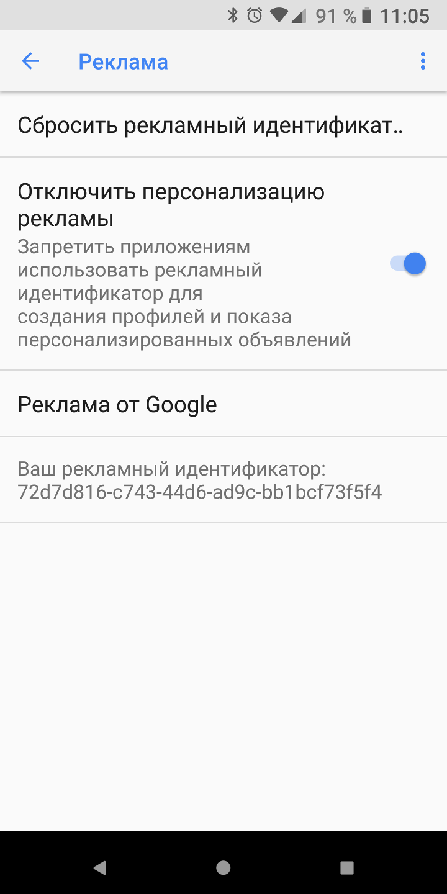

Не отслеживать Не отслеживать
Не отслеживать Не отслеживатьНесколько лет назад W3C (консорциум World Wide Web) создал механизм для браузеров для информирования веб-серверов о том, что они не хотели бы отслеживаться. Это достигается путем включения заголовка DNT (Не отслеживать) в веб-запросы.
Заголовок DNT на самом деле не обеспечивает большую конфиденциальность, поскольку большинство веб-серверов его игнорируют. Например, Yahoo, Google, Microsoft и Facebook игнорируют, по крайней мере, некоторые заголовки DNT.
Privacy Browser Free включает баннерную рекламу в нижней части экрана от сети Google AdMob. По умолчанию Google предоставляет рекламный идентификатор устройства для рекламы, отображаемой от этой сети. Это позволяет рекламным компаниям создавать профиль устройства, который отображает, какие приложения установлены (для показа рекламы), как часто они используются и какая реклама интересна пользователю.
Пользователи могут отключить рекламный идентификатор в Настройках, Google, Реклама.
Цель бесплатной версии Privacy Browser - позволить пользователям протестировать функции приложения. Стандартную версию можно приобрести в основных магазинах приложений или загрузить бесплатно из F-Droid.